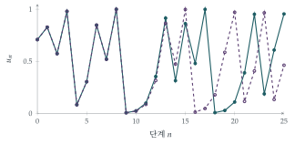

STEP I 2014, 문제 6
계속 읽기 전에 문제를 먼저 읽어 보자. 문제는 STEP Support Programme의 문제 데이터베이스에 있다: step.maths.org/questions/14-s1-q6
도입
규칙 \(u_{n+1} = ku_n(1 - u_n)\)을 로지스틱 사상(logistic map)이라 한다. 이것은 자원이 제한된 개체군을 나타내는 가장 단순한 모형이다. \(u_n\)은 \(n\)번째 해의 개체 수를 환경이 감당할 수 있는 최대 개체 수에 대한 비율로 나타낸 것이고, \(k\)는 번식률이며, 인수 \(1 - u_n\)은 과밀의 효과를 나타낸다. 1976년 생물학자 로버트 메이(Robert May)는 Nature에 “Simple mathematical models with very complicated dynamics(매우 복잡한 동역학을 지닌 단순한 수학적 모형)”라는 짧은 논문을 발표했다. 그는 \(k\)가 \(4\)를 향해 커짐에 따라 이 한 줄짜리 규칙이 한 값으로 안정되는 상태에서 진동하는 상태로, 그리고 완전히 무작위처럼 보이는 상태로 바뀐다는 것을 보였다. 이것은 혼돈(chaos)의 기초가 된 대표적인 예 가운데 하나가 되었다.
혼돈계는 보통 풀 수 없다. \(u_n\)에 대한 공식이 없으므로 \(u_{100}\)을 구하는 유일한 방법은 그 앞의 모든 항을 계산하는 것이다. 이 문제는 그 예외를 찾아낸다. 가장 혼돈스러운 값인 \(k = 4\)에서는 공식이 존재하며, 그 공식은 수열이 왜 예측 불가능한지를 정확히 설명해 준다.
시작하기 전에
\(s = \sin^2\theta\)일 때 식 \(4s(1 - s)\)를 어디서 본 적이 있는가? \(\sin^2\theta\), \(\cos^2\theta\), \(\sin 2\theta\)를 이어 주는 항등식(identity)은 무엇인가?
\(s = \sin^2\theta\)이면 \(1 - s = \cos^2\theta\)이므로 \(4s(1 - s) = 4\sin^2\theta\cos^2\theta = (2\sin\theta\cos\theta)^2 = \sin^2 2\theta\)이다. 사상 \(s \mapsto 4s(1 - s)\)는 모습을 바꾼 배각 공식(double-angle formula)이다.
차근차근 풀기
단계 1 규칙 추측하기
\(u_0 = \sin^2\theta\)로 두면 위의 항등식으로부터 \[u_1 = 4\sin^2\theta\cos^2\theta = \sin^2 2\theta, \qquad u_2 = 4\sin^2 2\theta\cos^2 2\theta = \sin^2 4\theta.\]
각 단계에서 각은 어떻게 되는가? \(u_n\)에 대한 추측(conjecture)은 무엇인가?
각이 매번 두 배가 되므로 \(u_n = \sin^2(2^n\theta)\)라고 추측한다.
단계 2 증명하기
한 항에서 다음 항으로 가는 규칙으로 정의된 수열의 모든 항에 대한 명제에는 어떤 증명 방법이 알맞은가?
수학적 귀납법(induction)이다. \(u_0 = \sin^2\theta = \sin^2(2^0\theta)\)이므로 명제는 \(n = 0\)일 때 성립한다. 어떤 \(n\)에 대하여 \(u_n = \sin^2(2^n\theta)\)라고 가정하자. 그러면 \[u_{n+1} = 4\sin^2(2^n\theta)\bigl(1 - \sin^2(2^n\theta)\bigr) = \bigl(2\sin(2^n\theta)\cos(2^n\theta)\bigr)^2 = \sin^2(2^{n+1}\theta),\] 이고, 이것은 \(n + 1\)에 대한 명제이다. 따라서 모든 \(n \geq 0\)에 대하여 \(u_n = \sin^2(2^n\theta)\)이다.■
\([0, 1]\)에 속하는 모든 시작값 \(u\)는 \(\sin^2\theta\) 꼴로 쓸 수 있으므로(\(\theta = \arcsin\sqrt u\)로 잡으면 된다), 이것으로 \([0, 1]\)의 모든 시작값에 대하여 \(k = 4\)인 로지스틱 사상이 풀린다는 점에 주목하자.
단계 3 변수 바꾸기
\(v_n = \alpha u_n + \beta\)를 \(v_{n+1}\)에 대한 규칙에 대입하라. 그 결과가 \(u_{n+1} = 4u_n - 4u_n^2\)이 되어야 한다. 이로부터 조건이 몇 개 나오고, 미지수는 몇 개인가?
대입하면 \[\alpha u_{n+1} + \beta = -p(\alpha u_n + \beta)^2 + q(\alpha u_n + \beta) + r,\] 이므로 \[u_{n+1} = -p\alpha\, u_n^2 + (q - 2p\beta)\, u_n + \frac{-p\beta^2 + q\beta + r - \beta}{\alpha}.\] 이것이 \(4u_n - 4u_n^2\)이 되려면 세 가지가 필요하다. \[p\alpha = 4, \qquad q - 2p\beta = 4, \qquad -p\beta^2 + (q - 1)\beta + r = 0.\] 앞의 두 식에서 \(\alpha = 4/p\), \(\beta = (q - 4)/(2p)\)로 정해진다. 남은 미지수가 없으므로 세 번째 식은 \(p\), \(q\), \(r\)에 대한 실질적인 조건이 된다. \(\beta\)를 대입하고 \(4p\)를 곱하면 \[-(q - 4)^2 + 2(q - 1)(q - 4) + 4pr = 0,\] 이고, 전개하면 \(-(q^2 - 8q + 16) + (2q^2 - 10q + 8) + 4pr = 0\), 즉 \(q^2 - 2q - 8 + 4pr = 0\), 다시 말해 \[4pr = 8 + 2q - q^2. \qed\]
식은 세 개인데 미지수는 두 개뿐이다. 조건이 나타나는 이유가 바로 이것이다. 계산하기 전에, 일반적인 이차 사상이 왜 항상 \((*)\)와 동치일 수는 없는지 알 수 있겠는가? (일차 변수변환이 바꿀 수 있는 것과 바꿀 수 없는 것을 생각해 보라.)
단계 4 예
\(v_{n+1} = -v_n^2 + 2v_n + 2\)에서는 \(p = 1\), \(q = 2\), \(r = 2\)이고 \(4pr = 8 = 8 + 4 - 4\)이므로 조건이 성립한다. 그러면 \(\alpha = 4\), \(\beta = -1\)이므로 \(v_n = 4u_n - 1\)이고, \(u_n\)은 \((*)\)를 만족한다. \(v_0 = 1\)이므로 \(u_0 = \frac12 = \sin^2\frac{\pi}{4}\)이고, 따라서 \[u_n = \sin^2\!\Bigl(\frac{2^n\pi}{4}\Bigr), \qquad v_n = 4\sin^2\!\Bigl(\frac{2^n\pi}{4}\Bigr) - 1 = 1 - 2\cos\Bigl(\frac{2^n\pi}{2}\Bigr).\] 이로부터 \(v_0 = 1\), \(v_1 = 3\)이고 모든 \(n \geq 2\)에 대하여 \(v_n = -1\)이다. (직접 확인해 보자. \(-1 + 2 + 2 = 3\), 다음으로 \(-9 + 6 + 2 = -1\), 다음으로 \(-1 - 2 + 2 = -1\)이다.)■
이 특별한 시작값은 각이 \(\pi\)의 배수에 떨어져 수열이 멈추도록 고른 것이다. 그 때문에 흥미로운 부분이 가려져 있는데, 그것이 다음에 이어진다.
돌아보기
변장을 알아보라. 사상 \(s \mapsto 4s(1 - s)\)는 \(s = \sin^2\theta\)로 쓰자마자 각을 두 배로 하는 사상이 되었다.
추측하고, 귀납법으로 증명하라. 두 항이 규칙을 암시했고, 귀납법이 그것을 증명했다.
식과 미지수의 개수를 세라. 일차 치환에는 자유로운 매개변수가 두 개, 이차식에는 계수가 세 개 있으므로 조건 하나가 남을 수밖에 없다.
숨은 수학
수열이 예측 불가능한 이유
공식 \(u_n = \sin^2(2^n\theta)\)는 이야기의 끝처럼 보인다. 어떤 항이든 직접 계산할 수 있기 때문이다. 하지만 이 공식이 무엇을 말하는지 살펴보자. \(\sin^2\)의 주기는 \(\pi\)이므로 \(2^n\theta\)를 \(\pi\)로 나눈 나머지만 의미가 있다. \(0 \leq x < 1\)인 \(x\)로 \(\theta = \pi x\)라 쓰고, \(x\)를 이진법(binary)으로 나타내자. \[x = 0.b_1 b_2 b_3 \ldots \quad(\text{밑 } 2).\] \(2\)를 곱하면 소수점이 오른쪽으로 한 자리 이동하고, 그 결과를 \(1\)로 나눈 나머지를 취하면 소수점을 넘어간 자릿수가 버려진다. 따라서 \(u_n\)은 \(x\)의 이진 자릿수 가운데 \(b_{n+1}\) 이후의 것에만 의존한다. 로지스틱 사상의 각 단계는 시작값의 자릿수를 하나 더 읽고, 맨 앞의 자릿수 하나를 버린다.
이것이 혼돈의 결정적 특징인 초기 조건에 대한 민감한 의존성(sensitive dependence on initial conditions)이다. 이진법으로 \(20\)자리(십진법으로 약 여섯 자리)까지 일치하는 두 시작값은 대체로 약 \(20\)단계 동안 일치하는 수열을 만들고, 그 뒤에는 서로 아무 관계가 없어진다(그림 8.7.1). \(u_{100}\)을 예측하려면 \(u_0\)을 이진법으로 \(100\)자리까지 알아야 한다. 시작 각의 오차는 아무리 작더라도 매 단계 두 배가 된다. (개체 수 \(u\) 자체의 오차는 매번 정확히 같은 비율로 커지지는 않는다. 사상이 \([0, 1]\)의 어떤 부분은 다른 부분보다 더 많이 늘리기 때문이다. 그러나 평균적으로는 같은 비율로 커진다.) 공식이 도움이 되는 것은 아니다. 공식은 그저 그 메커니즘을 눈에 보이게 해 줄 뿐이다.

어디에나 있는 주기점
이 공식으로 사상의 모든 순환도 찾을 수 있다. 수열이 \(N\)단계 뒤에 시작값으로 돌아오는 것은 정확히 \(\sin^2(2^N\theta) = \sin^2\theta\)일 때, 즉 \(2^N\theta \equiv \pm\theta \pmod{\pi}\)일 때이다. 따라서 \(\theta = m\pi/(2^N - 1)\) 또는 \(\theta = m\pi/(2^N + 1)\)은 주기가 \(N\)의 약수인 점을 준다. 예를 들어 \(\theta = \pi/5\)는 \(4\theta \equiv -\theta\)를 만족하므로 \(\sin^2\frac{\pi}{5} \to \sin^2\frac{2\pi}{5} \to \sin^2\frac{4\pi}{5} = \sin^2\frac{\pi}{5}\)는 \(2\)-순환이다. 모든 주기의 주기점(periodic point)이 존재하며, 이들은 \([0, 1]\)에서 조밀(dense)하다. 즉 아무리 작은 구간에도 수열이 반복되는 시작값이 있다. 그런데도 오차가 두 배씩 커지므로 이들은 모두 불안정하다. 주변의 모든 것을 밀어내는 조밀한 주기점은 혼돈의 두 번째 특징이다.
혼돈에 이르는 길
\(k\)가 더 작으면 공식이 없고, 행동 양상은 \(k\)에 따라 극적으로 달라진다(그림 8.7.2). \(1 < k < 3\)이면 \((0, 1)\)에서 시작하는 모든 수열이 고정점(fixed point) \(1 - 1/k\)로 수렴한다. \(k = 3\)에서 고정점이 불안정해지고 \(2\)-순환이 그 자리를 차지한다(이것이 STEP II 2002 Q5의 주제이다. 연습문제를 보라). \(k = 1 + \sqrt6 \approx 3.449\)에서 \(2\)-순환은 \(4\)-순환에, 이어서 \(8\)-순환에 자리를 내주며, 주기 배가(period doubling)는 점점 더 빨리 일어나다가 \(k \approx 3.5699\)에서 순환의 길이가 무한대가 되고 혼돈이 시작된다. 혼돈 영역 안에는 질서의 창이 있다. 가장 뚜렷한 것은 \(k = 3.83\) 근처에 있으며 \(3\)-순환을 포함하는데, 이것이 8.8 절의 주제이다.

1975년 로스앨러모스(Los Alamos)에서 일하던 미첼 파이겐바움(Mitchell Feigenbaum)은 프로그래밍이 가능한 휴대용 계산기로 주기가 두 배가 되는 \(k\)의 값 \(k_1 = 3\), \(k_2 \approx 3.4495\), \(k_3 \approx 3.5441\), \(k_4 \approx 3.5644\), …를 측정했다. 그는 그 간격이 일정한 비율로 줄어든다는 것, \[\frac{k_{n} - k_{n-1}}{k_{n+1} - k_{n}} \to 4.6692\ldots,\] 을 알아챘고, 놀랍게도 같은 수 \(4.6692\ldots\)가 \(x \mapsto k\sin(\pi x)\)에서도, 그리고 꼭대기가 포물선처럼 둥근 봉우리 하나를 가진(이차 극대(quadratic maximum)) 다른 모든 매끄러운 사상에서도 나타난다는 것을 발견했다. 이 상수는 그 부류 전체에 대하여 보편적(universal)이다. \(-x^4\) 모양처럼 봉우리 꼭대기가 더 평평한 사상들은 저마다의 보편 상수를 가진다. 이 상수는 그 뒤 물방울이 떨어지는 수도꼭지, 가열된 유체, 전자 회로에 대한 실험에서도 측정되었다. 그 이유를 설명하려면 상전이 물리학에서 빌려 온 아이디어가 필요했고, 1982년에야 Oscar Lanford가 컴퓨터의 도움을 받아 엄밀하게 증명했다.
같은 기법, 세 번
소문항 (ii)의 치환은 켤레(conjugacy)의 한 예이다. 변수변환으로 한 사상을 다른 사상으로 바꿀 수 있으면 두 사상은 켤레라 하고, 이때 두 사상은 정확히 같은 동역학을 가진다. 이 문제는 조건을 만족하는 모든 이차 사상이 \(k = 4\)인 로지스틱 사상과 켤레임을 보여 주며, 로지스틱 사상은 다시 \(u = \sin^2\theta\)를 통해 모습을 바꾼 각 배가 사상이다. (엄밀히 말하면 이 마지막 연결은 반켤레(semiconjugacy)이다. \(\theta\)와 \(\pi - \theta\)가 같은 \(u\)를 주므로 이 변수변환은 일대일(one-to-one)이 아니다. 로지스틱 사상은 \([0, 1]\)에서 일대일인 \(u = \sin^2\frac{\pi t}{2}\)를 통해, \(t \leq \frac12\)일 때 \(t \mapsto 2t\)이고 \(t \geq \frac12\)일 때 \(t \mapsto 2 - 2t\)인 텐트 사상(tent map)과 진정으로 켤레이다.) 2.8 절에서 만난 \(x \mapsto x^2 - 2\)는 \(x = 2\cos\theta\)로 풀렸고 각이 매 단계 두 배가 되었다. 이 사상도 조건을 만족한다(확인해 보라). 따라서 이것들은 모두 모습만 바꾼 같은 사상이다. 8.8 절에서는 이 가족의 세 번째 구성원, 즉 직선으로 만든 사상인 텐트 사상이 등장한다.
사고 기술
좋은 치환은 복잡한 규칙을 단순한 규칙으로 바꿀 수 있다. 문제를 이미 이해하고 있는 문제로 바꾸어 주는 변수변환을 찾아라.
여기서는 \(u = \sin^2\theta\)가 이차 사상을 각 배가 사상으로 바꾸었고, 일차 치환이 이차식의 한 가족 전체를 하나로 바꾸었다. 대학에서 켤레는 핵심적인 도구이다. 동역학계(dynamical systems)에서, 선형대수학(linear algebra)에서(행렬을 대각화(diagonalising)하는 것은 그 행렬이 단순해지는 좌표를 고르는 일이다), 그리고 군론(group theory)에서 쓰인다.
더 도전하기
로지스틱 사상의 순환. STEP II 2002, 문제 5를 풀어 보라. 그런 다음 \(2\)-순환은 \(k > 3\)일 때에만 존재함을 보여라.
제곱하고 2 빼기. \(v_{n+1} = v_n^2 - 2\)가 소문항 (ii)의 조건을 만족함을 보여라(\(p = -1\)로 두고 \(-pv_n^2 + qv_n + r\) 꼴로 써라). \(\alpha\)와 \(\beta\)를 구하고, 그 답이 \(v_n = 2\cos(2^n\phi)\)와 일치하는지 확인하라.
\(3\)-순환. 공식 \(u_n = \sin^2(2^n\theta)\)를 이용하여 \(u_{n+1} = 4u_n(1 - u_n)\)의 \(3\)-순환을 구하라. (힌트: \(\theta = \pi/7\)이나 \(\theta = \pi/9\)를 시도해 보라.) 주기가 정확히 \(3\)인 점은 몇 개인가?
사라지는 자릿수. 컴퓨터는 수를 이진법으로 약 \(53\)자리까지 저장한다. 컴퓨터로 \(u_{n+1} = 4u_n(1 - u_n)\)을 반복하면 대략 몇 단계 뒤에 계산된 값이 참인 수열과 아무 관계가 없어지는가? 그렇다면 그때 계산된 수열은 쓸모없는가?
더 읽을거리
Robert May, “Simple mathematical models with very complicated dynamics”, Nature 261 (1976). 고전이며, 지금도 매우 읽기 쉽다.
James Gleick, Chaos: Making a New Science (Penguin). 메이, 파이겐바움, 그리고 혼돈의 발견에 관한 이야기이다.
Steven Strogatz, Nonlinear Dynamics and Chaos (CRC Press), 10장. 1차원 사상, 로지스틱 사상, 파이겐바움 상수를 대학 1학년 수준에서 다룬다.
Ian Stewart, Does God Play Dice? (Penguin). 혼돈을 대중적으로 소개하는 책으로, 로지스틱 사상에 관한 좋은 장이 있다.